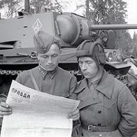

Особенности литературы

Война заставляла задуматься не только о настоящих проблемах, но и об истории России. Именно в это время появляются работы А. Толстого «Родина», «Петр Первый», повесть «Иван Грозный», а также «Великий государь», пьеса В. Соловьева . Появилось такое понятие, как произведение, написанное «По горячим следам». То есть буквально вчера вечером написанное стихотворение, очерк или рассказ, сегодня мог появиться в печати. Большую роль играла публицистика, так как благодаря ей виделась возможность задеть патриотические чувства русских людей. Как говорил А. Толстой, литература стала «голосом русского народа». Стихотворениям о войне уделялось то же внимание, что и обычным политическим или светским новостям. Печать регулярно публиковала отрывки из творчества советских поэтов.